Intervención Morada
URBANISMO · UT302
Sutura Urbana
Univ. Mayra Huancollo Choque - FAADU - ARQUITECTURA
Univ. Manuel Alejandro Fernandez Uzquiano - FCPN - INFORMÁTICA
¿DE QUE TRATA EL PROYECTO? Es una estrategia de acupuntura urbana que combate la desmembración de la zona mediante una arteria amarilla de losetas podotáctiles y arte. El proyecto rehabilita plazas, parques y el Pasaje de la Queñua, utilizando el arte y el muralismo para "coser" el tejido vecinal con el área protegida. Dando la bienvenida a visitantes y vecinos hacia el Area protegida de Bolognia.
Cada punto verde en el modelo representa un ave del territorio andino. Descubre su nombre, nombre científico y escucha su canto.
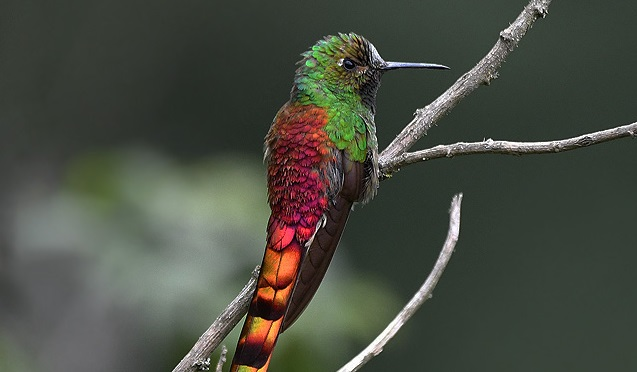
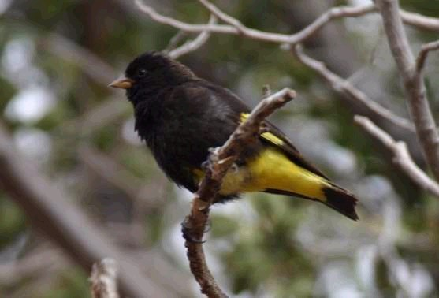
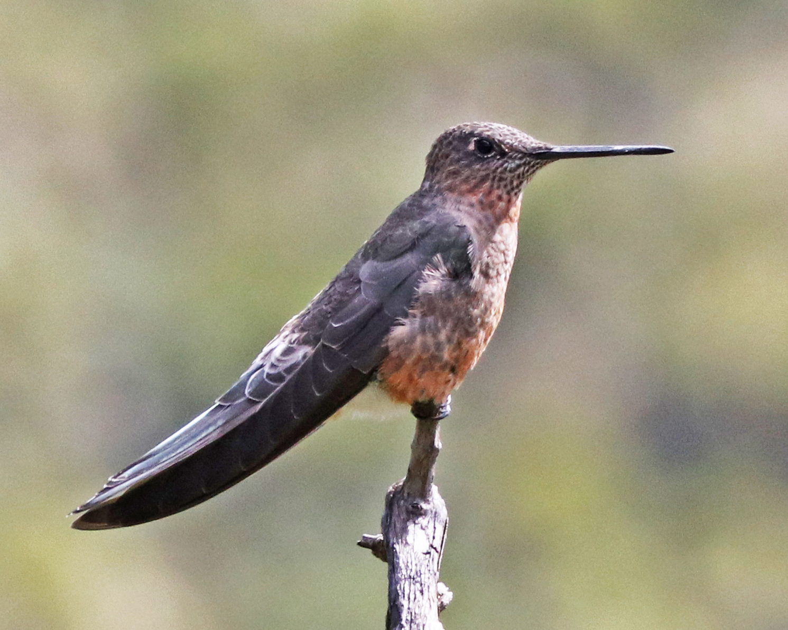
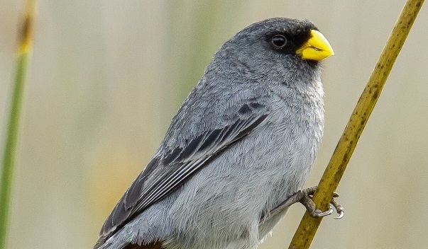
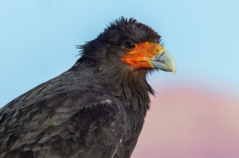
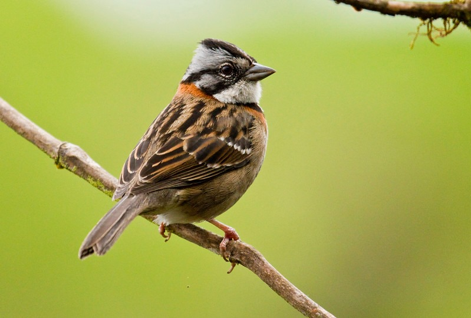
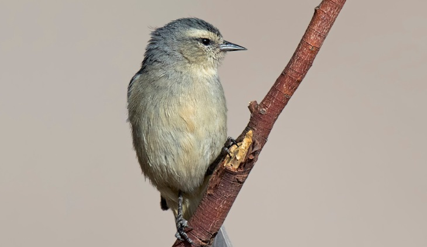
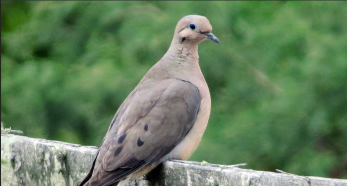
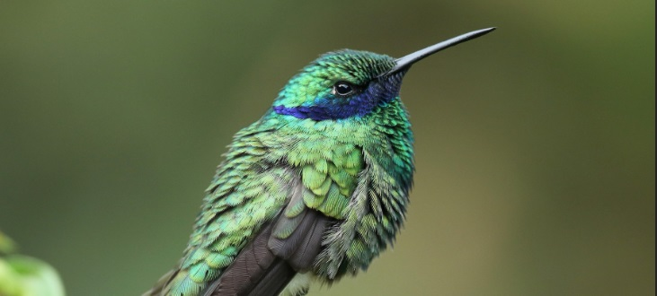
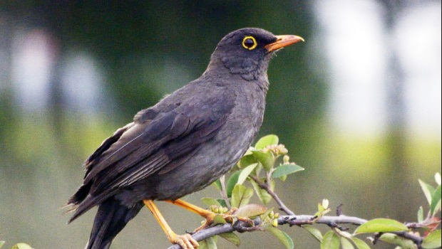
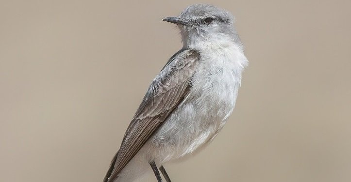
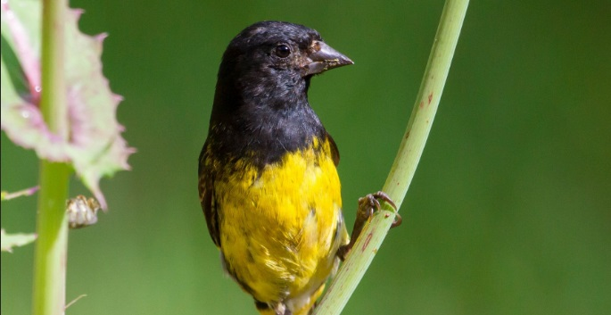
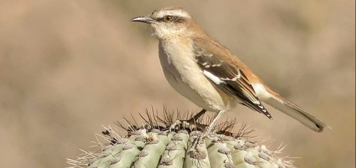
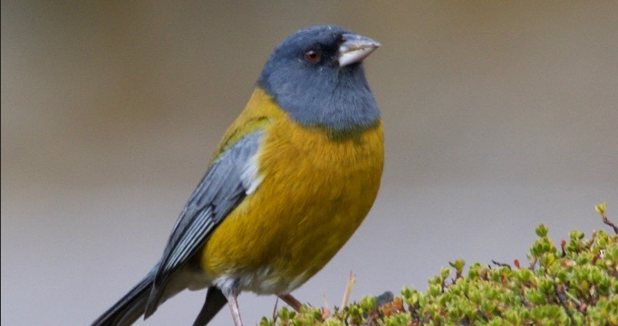
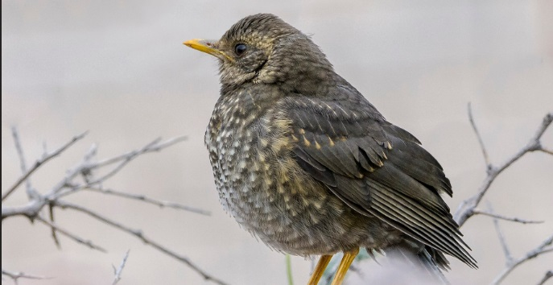
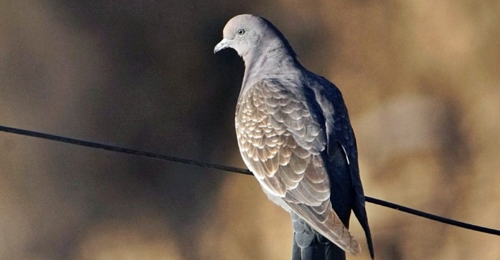
El proyecto se articula mediante dos ejes estratégicos:
1. las intervenciones moradas, enfocadas en la revitalización de plazas,parques, callejones, areas residuales, ingresos y graderias.
2. Las intervenciones amarillas, destinadas a corredores con losetas podotáctiles para el usuario visitante o propio del lugar..
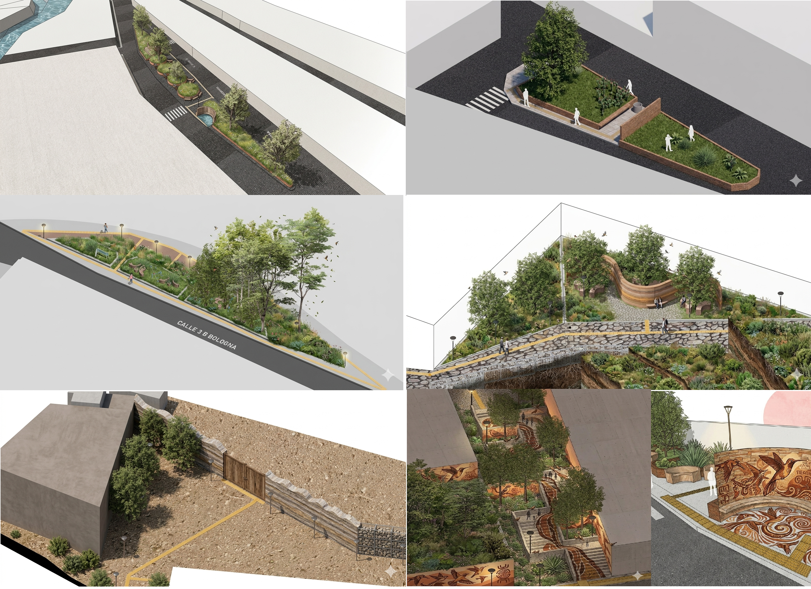
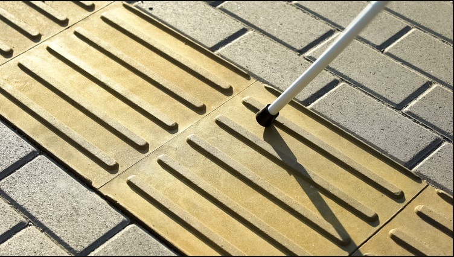
- El primer panel presenta el diagnóstico detallado de debilidades y fortalezas de Bolognia.
- El segundo panel despliega las propuestas urbanísticas diseñadas para resolver dichas problemáticas.
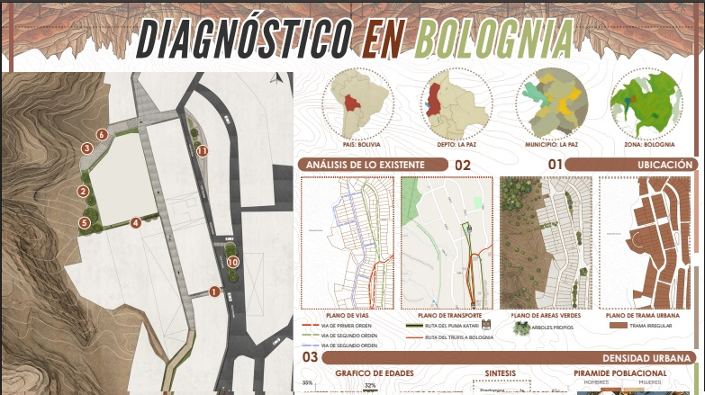
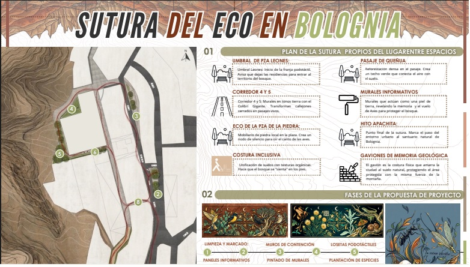